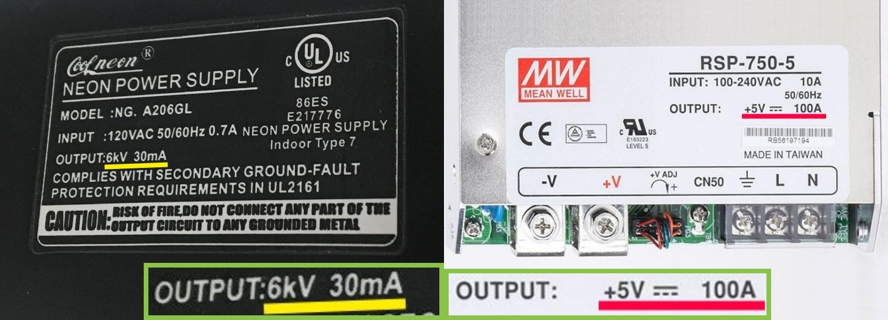
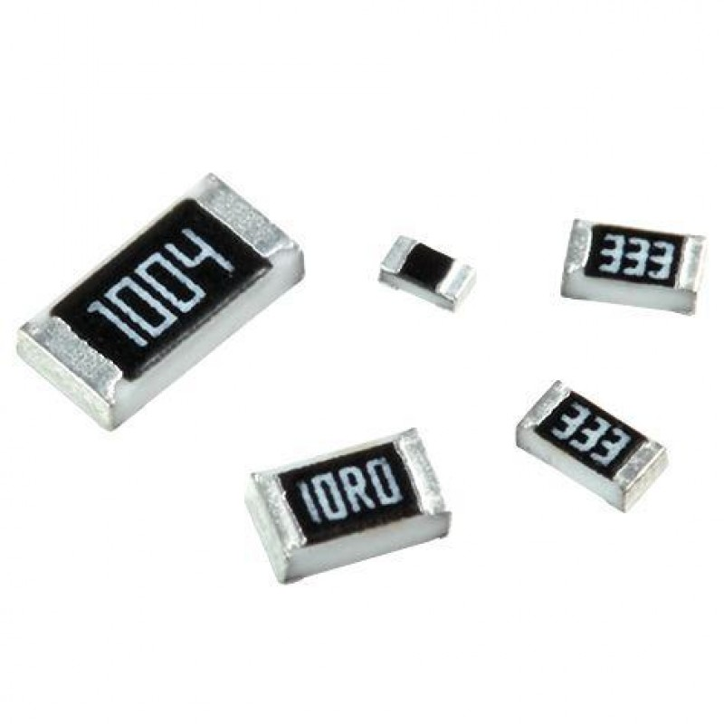
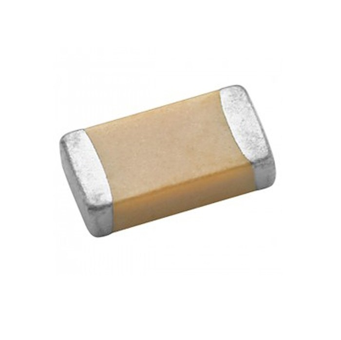
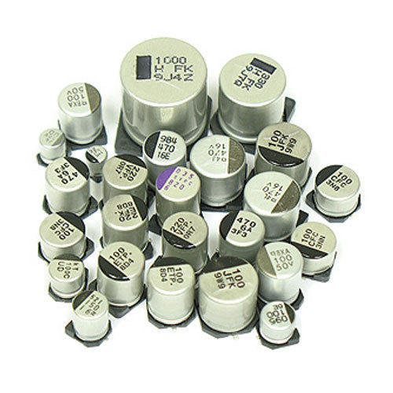
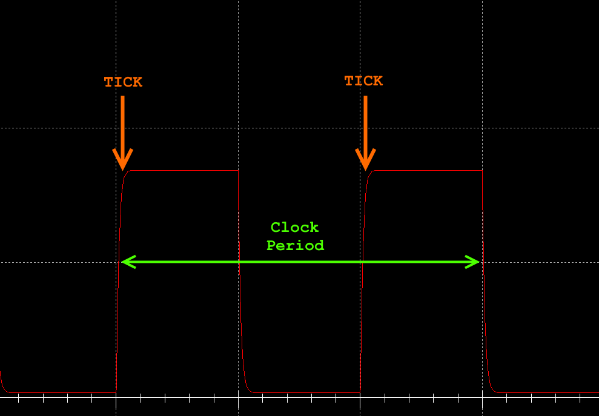
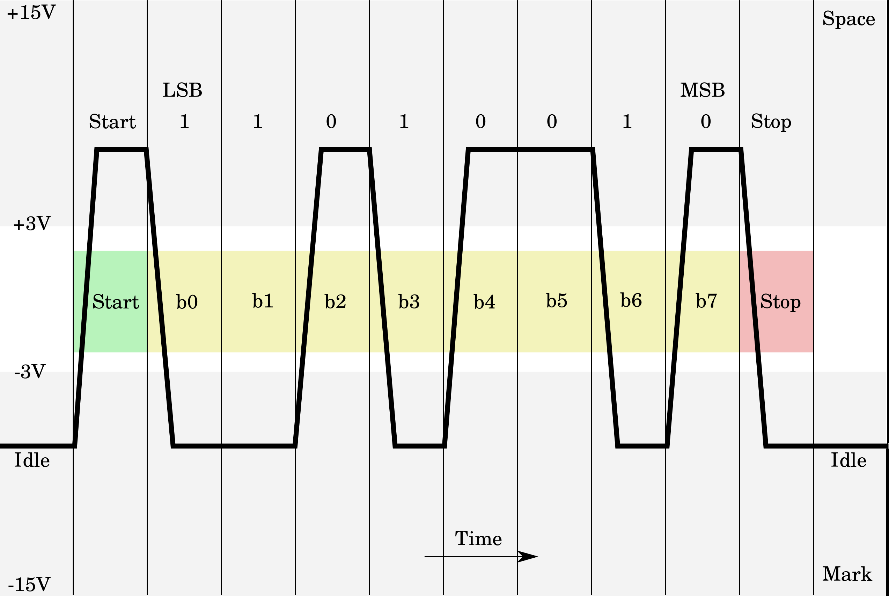
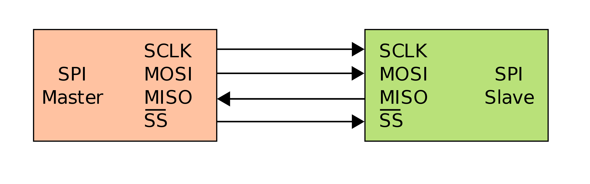
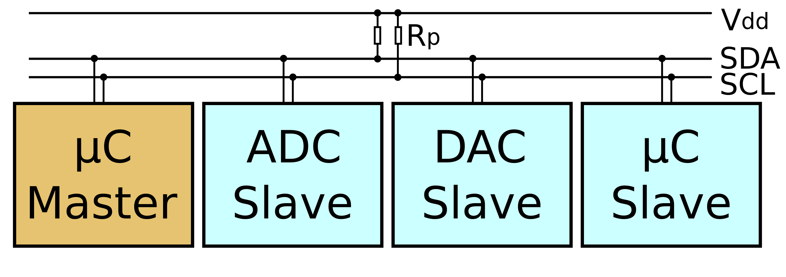

Hardware Isn't Hard
Graham Sutherland - Nettitude Research & Innovation
whoami
- Graham Sutherland
- Senior Researcher @ Nettitude R&I
- Serial Securi-Tay Speaker
- Electronics Tinkerer
- Twitter: @gsuberland
Why hardware?
Talk outline
- Basic physics
- Safety
- Components
- Diagrams and PCBs
- Logic
- Processors
- Interfaces
- Tools
- Resources
Physics
Definitions
V - Voltage (Volts, V)
I - Current (Amps, A)
R - Resistance (Ohms, Ω)
P - Power (Watts, W)
Ohm's Law
I = V / R
R = V / I
V = I * R
Power
P = V * I
I = P / V
V = P / I
P = I2 * R
Safety
Beware this advice
What's more dangerous?
Electric Shocks
- Human body resistance: 500-1000Ω*
- Lethal current: 0.1-0.2A (100-200mA)
- Ohm's law: V = I * R
- V = 0.1A * 500Ω = 50V
* Worst case model of wet body or broken skin; dry body may have resistance up to 100kΩ
Electric Shocks
- Dry human body resistance: 10-100kΩ
- Lethal current: 0.1-0.2A (100-200mA)
- UK Mains Voltage: 230V
- Ohm's law: I = V / R
- I = 230V / 10000Ω = 0.023A (23mA)
Approximate
Shock Thresholds
| Affect | AC Current | AC Voltage | DC Current | DC Voltage |
|---|---|---|---|---|
| Slight sensation | 1mA | 0.5V | 5mA | 2.5V |
| Minor shock | 2mA | 1V | 8mA | 4V |
| Painful shock | 7mA | 3.5V | 50mA | 25V |
| Muscle contraction | 12mA | 6V | 65mA | 32V |
| Breathing trouble | 20mA | 10V | 75mA | 37.5V |
| Fibrillation | 100mA | 50V | 500mA | 250V |
Values expressed are subject to variation and are not intended to be guaranteed safety advice.
Experimental verification of these numbers may lead to death. Avoid wherever possible.
AC voltage at 60Hz. Bodily resistance assumed to be 500Ω (wet body / broken skin)
Data source: Health and Safety Manual, LBNL/PUB-3000.
Voltage usually decides your fate
Components
Passives
  Resistor
- Resistance, ohms (Ω)
- Limits current
Capacitor
- Capacitance, farads (F)
- Stores charge
- Ceramic (MLCC) - nonpolar, small capacitance
- Electrolytic - polar, big capacitance
- Not perfectly conductive - ESR
- Other types: tantalum, alupoly, film
Inductors
Actives
- Transistors
- Opamps
- Logic gates
- ...
Diodes
... and LEDs!
Passive? Active?
Circuit Boards
Designators
Reference designator or "refdes"
| Refdes | Component |
|---|---|
| R | Resistor |
| C | Capacitor |
| L | Inductor |
| Q | Transistor |
| D | Diode (or LED) |
| F | Fuse |
| U | Integrated Circuit (IC) |
| Y / XTAL | Crystal |
| J | Jack or Connector |

Circuit Diagrams
source: https://xkcd.com/730/
Logic
Logic
| Value | Voltage |
|---|---|
| 0 | low |
| 1 | high |
Logic
| Value | Voltage |
|---|---|
| 0 | 0V |
| 1 | +V |
Logic Levels
| +5V | +3.3V | +1.8V |
Don't blow up your hardware
| Hardware | Logic Level |
|---|---|
| Arduino Uno | 5V |
| Arduino Mega | 5V |
| Arduino Due | 3.3V |
| Raspberry Pi | 3.3V |
| ESP8266 / ESP32 | 3.3V |
| Teensy | 3.3V (5V tolerant) |

Clocks
Processors
Processors
- Microprocessors
- Microcontrollers
- Programmable Logic
Microprocessors
- Fetch instructions
- Decode instructions
- Execute instructions
- Use external memory
- Use external peripherals
- Example: Zilog Z80
Microcontrollers
- Contain a microprocessor
- Contain memory
- Contain program flash
- Internal peripherals
- Standalone / general purpose
- Example: Atmel ATmega328P
Programmmable Logic
- Array of configurable logic gates
- Interconnected logic, not instructions
- Used for specialist applications
- Types: PAL, PLA, CPLD, FPGA
- Can implement MPUs / MCUs
- Example: Lattice iCE40 FPGA
- Example application: RISC-V
Interfaces
GPIO
void setup() {
pinMode(13, OUTPUT); // sets the digital pin 13 as output
}
void loop() {
digitalWrite(13, HIGH); // sets the digital pin 13 on
delay(1000); // waits for a second
digitalWrite(13, LOW); // sets the digital pin 13 off
delay(1000); // waits for a second
}
UART
void setup() {
Serial.begin(9600); // 9600 baud (bytes per second)
}
void loop() {
Serial.println("Hello world!"); // print text to UART
}

RS232
SPI
I2C
JTAG
ISP / ICSP
Tools
Measurement
- Multimeter
- Oscilloscope
- DS212
- Open Workbench Logic Sniffer
- PicoScope
- Old CRT scopes!
Interfaces
- FT232H Boards
- BusPirate
- HydraBus
- Glasgow
Development
- Arduino
- NodeMCU
- Raspberry Pi / SBCs
- Parallax Propeller
Radio
- RTL-SDR
- HackRF
- BladeRF
- USRP
Conclusion
END
- Parts: Farnell, CPC, Mouser, Digi-Key, RS, BitsBox, eBay, AliExpress
- Custom PCBs: PCBShopper (I like Elecrow and JLCPCB)
- Twitter: @whitequark @scanline @marcan42 @_MG_ @GlytchTech @hedgeberg @esden @securelyfitz @cybergibbons @tinyfpga @GregDavill @fpga_dave
- YouTube: bigclivedotcom | mikeselectricstuff | scanlime | Robert Feranec | electronupdate | Marco Reps | Robert Baruch | Colin O'Flynn
- Q&A: Electronics StackExchange | ##electronics on Freenode IRC
- Books: Art of Electronics | Practical Electronics for Inventors
- Formal: Coursera - Introduction to Electronics (Georgia Tech)